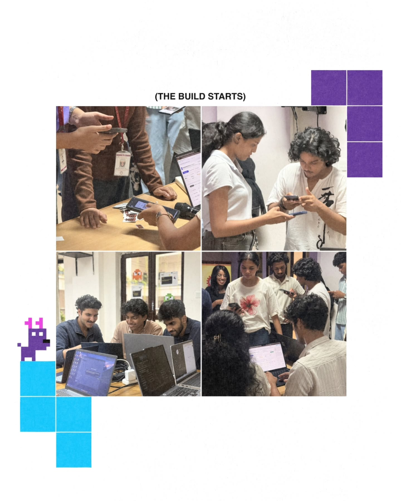

TinkerHub SCMS Chapter // Ref: #UP3-SSET-2026
Post Card
INDIA
₹5
POSTAGE
TINKERHUB
SSET
SEP 2026
VENUE: SCMS School of Engineering & Technology (SSET),
Palissery, Karukutty, Angamaly, Ernakulam, Kerala 683576

"2:00 PM • Checking in at SCMS SSET labs • The build begins!"